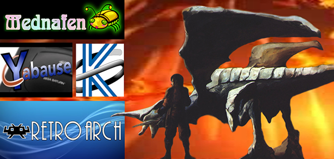
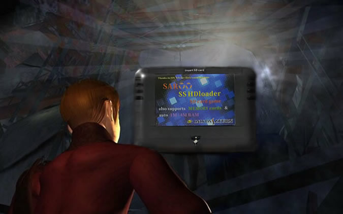

|  |
| How to Emulate the Panzer Dragoon Series
Introduction:
Emulation allows players to run the older Panzer Dragoon games on a modern Windows PC. Various emulators such as RetroArch, Mednafen and Yabause facilitate this. In addition, the Retroarch Kronos and Yabause emulators can upscale and smooth out the graphics. These emulators will play and run any .cue file you have ripped from any legally owned Saturn game.
Sega Saturn Emulators Important Info:
RetroArch Sega Saturn Kronos Core Emulator: RetroArch is an all-in-one emulator, but has a very good Sega Saturn emulator called Sega Saturn Kronos. Sega Saturn emulation has come a long way over the years and we finally have a user friendly Saturn emulator that is easy to use and setup. RetroArch Kronos also offers full controller support and lets you upscale the game to 1080p or 720p (720p with no loss of fps). So if you don't like the pixelated, blurry mess you get with the Mednafen Saturn emulator, RetroArch Kronos is the way to go. For this emulator you need to first install the RetroArch emulator interface. Then, download the Sega Saturn Kronos core.
Yabuase 0.9.15 (Standalone Sega Saturn Emulator): Standalone Yabause is
also a great second alternative because it can run at 1080p with almost
no loss of fps. You can also use the Bilinear Filtering option to
smooth out the graphics (and that looks really nice!). The only downside
is there is no analog support as you can only fully map the controls
with the "pad" controller option. And this option will only
let you use the d-pad, as attempting to use the 3D pad controller
option won't let you map the L and R buttons correctly. But you can
use the 3D control pad option for NiGHTS into Dreams with full analog
control, but just without L and R input. As you won't need that for
the game anyways. If you have any loud sound issues try un-selecting
"Enable higher quality sound", found in settings/sound options.
And make sure SDL Sound Interface is selected.
Mednafen (Standalone Sega Saturn Emulator): Is reliable, functional and good compatibility-wise, but there is no upscale. So, the graphics will look pixelated and blurry. But everything works perfectly and functions like the real hardware, albeit no upscale.
Xemu (Standalone Xbox Emulator): The Xbox emulator Xemu, can successfully play Panzer Dragoon Orta from start to finish. Just take note, you may need a moderately powerful pc for it to run properly.
Saroo: Sega Saturn Cart Emulation using Real Hardware! Saroo is a real emulation cart that works with real Saturn hardware to play any ISO of any game. Once the games are uploaded to the cart you just plug it into the Saturn's memory slot like you would a normal memory card! You can have your entire library on one cart!
Emulator Updates and Emulation Notes:
RetroArch Kronos core update: As of 12/26/2023 The RetroArch Saturn Kronos core has been fixed and is working properly. The black screen at the start and missing text have all been fixed. Make sure RetroArch is up-to-date (1.16.0) and if you already have the Kronos core installed be sure to update that as well so it works properly.
Panzer Dragoon Saga Emulation Notes: With the Kronos core and Yabause, there is only a small graphical texture glitch at the beginning of the game on the underside of the Excavation site and a minor graphical texture issue in the void of Sestren at the end of the game. There may also be some slight sound issues in the Garil Desert. Otherwise the emulation of Yabause and Kronos is great. I had one issue where the sound got very loud so I un-selected "Enable higher quality sound", found in settings/sound options and that fixed the issue. And make sure SDL Sound Interface is selected. With Panzer Dragoon Saga becoming ridiculously expensive over the past couple of years, I decided to make this emulation setup guide. Now you can experience the Panzer Dragoon Series without emptying your entire bank account!
How to Legally Rip Games:
If you already own the physical copies of the Panzer Dragoon games you can use a program called Alcohol 120% to extract and rip your .cue and .bin files.
https://www.alcohol-soft.com/designzoo/downloada120fe.html
RetroArch Emulator Setup:
Go to https://www.retroarch.com site and choose which device you want to install the emulator for. Once you have RetroArch installed you will need to put the bios files in the system folder found in your RetroArch main installation folder. Although, you’ll have to find the Bios files yourself, if you do a google search there is a pack on http://archive.org Once you have the emulator installed go to main menu and select the "Online Updater". Update everything in here. Then in RetroArch settings go to settings: Video/Scaling/Aspect Ratio/and set the aspect ratio to 16:9. Next you will need to download the Sega Saturn cores. A core is the emulator itself of which you install within the Retroarch user interface. You will have a choice between 4 different Saturn emulators or cores. Go to main menu and select download core and select the Sega Saturn Kronos core. As of 12/26/23 the Kronos core has been completely fixed. The issues with having a black screen and missing text have all been resolved. For the Kronos core to work properly make sure the main RetroArch installation is updated to 1.16.0 and if the Kronos core had been installed previously make sure to update that as well. Note: the only Saturn core that works 100% in RetroArch as of now is the Kronos Core. The other cores like Yabause might have slight issues that impair their use. But if you want to use Yabause or Mednafen as standalone emulators, separate from RetroArch, they work fairly well. For more information on those standalone emulators see their respective sections further down in this guide. Note: (This is very important) For a game with multiple discs like Panzer Dragoon Saga and all single games as well, make sure you test out each individual game file in Retroarch Kronos, by itself, to see if it works properly before playing. Concerning a game with multiple discs, If one of the discs/iso are corrupted when you go to switch discs, the disc won't load and you will just be stuck in the Saturn internal menu. As long as each individual disc works you will be fine. RetroArch Kronos will load any .cue file of a game but it has to have the .bin file to go along with it or the game won't load at all.
Setup for multiple discs:
Once your Sega Saturn Kronos core is downloaded and you've tested and verified that each individual game iso works, you need to set up your game files for multiple discs. If you have no multiple disc games or don't intent to play any, you can skip this step. Assuming you do, the instructions are as follows: RetroArch will scan and play any .cue file of a specific game. Again just make sure to have the .bin file to go along with it. For a multi disc games like Panzer Dragoon Saga you need to go through an additional step. You need to set up a .m3u text document containing all of your game files. Each game multi disc or not, should have its own separate folder. So concerning a multiple disc game like Panzer Dragoon Saga, make a folder and put all 4 iso .cue and all 4 .bin files into it. Once everything is in one folder and organized we need to make the m3u file. So, open up notebook or notebook++ and copy the name of each of your .cue game files exactly, for each disc as shown bellow and in the visual guide.
Visual Guide https://docs.retroachievements.org/Multi-Disc-Games-Tutorial/
Panzer Dragoon Saga (Disc 1 of 4) (NTSC).cue Panzer Dragoon Saga (Disc 2 of 4) (NTSC).cue Panzer Dragoon Saga (Disc 3 of 4) (NTSC).cue Panzer Dragoon Saga (Disc 4 of 4) (NTSC).cue
Then go to file and save as. You can save this file whatever you want so I saved mine as: Panzer Dragoon Saga.m3u. But the ending extension is very important and it needs to be .m3u NOTE: If you can't see the .txt extension at the end of your text document title you need to change your settings to show known file extensions. In Windows 10 it's very simple, you can find that on your folder under 'View' and a checkbox reading 'File name extensions'. Once you create this file put it in the same directory as your game files. Then when in Retroarch use this file to load your game. Go to main menu/load content and select your game folder location and load that m3u file. Your game should boot up and you can select which core you want to use. I suggest the Kronos core as you can upscale the graphics. When you actually have to switch discs you will need to press F1 and go into the quick menu and perform these steps:
Play until the "Please insert disc 2" prompt. Quick Menu > Disc Control > Eject Disc. QUICK MENU > RESUME, just for a second. Quick Menu > Disc Control > Current Disc Index, change for disc 2. And finally: Insert Disc. Note: After you switch discs, within the Saturn menu, the button on the upper left will change to a curved "S". You can then select it to start the disc up. For all other single disc games you can just go to main menu/load content and just load the .cue game file as is. Just make sure the .bin file is in the same folder as the .cue game file.
Kronos Game Settings:
While a game is running if you press F1 you will be presented with a number of emulator options. Unlike Mednafen, Kronos actually upscales the game all the way up to 8K resolution! Within this options menu, you can fine tune your graphics settings or make any save states. For the Kronos Sega Saturn core I suggest these settings:
SH-2 cpu core: Kronos ("Old" setting not supported any longer.) Resolution: 1080p or 720p (If you experience slowdown stick with 720p.) Polygon Mode: gpu-tesselation Improved Mesh: on
Using the New Retro-bit Saturn PC Controller: You can also use the new Retro-bit Analog PC Saturn Controller. If you press start and B held down on the controller you switch between D-input and X-input. Make sure the controller has 2 lights indicated. Then just go to settings/input/port 1 controlls to map your buttons.
Making Save States:
While a game is running press F1 to go into the menu and select "Save State". Note: this feature was recently fixed, so be sure before starting the game you "update installed cores" with the "Online Updater" found in the main RetroArch menu.
RetroArch Kronos Compatibility List:
Official List: https://tradu-france.com/wiki-emu-compatibility/index.php?title=Compatibility_list_of_Kronos
Games I've tested:
Panzer Dragoon (Works well) Panzer Dragoon Zwei (Works well) Panzer Dragoon Saga (Works well) Nights into Dreams (Works well) Christmas Nights (Works well) Guardian Heroes (Tested a clean rip using Alcohol 120%) Magic Knight Rayearth (Works well) Sonic 3D Blast (Tested a clean rip using Alcohol 120%) Sonic Jam (Works well)
Games that didn't work properly:
Dark Savior (Works but missing text boxes even with clean rip from Alcohol 120%) Astal (Didn't work even with a clean rip from Alcohol 120%%) Burning Rangers (Massive slow down at start of level then just freezes)
(Standalone Sega
Saturn Emultors)
Mednafen Emulator Setup:
Once you have Mednafen installed you need to go into your installation folder, right click on the mednafen.ctg file and open it up in a program like notepad and make some changes. Note: you can also download and drag a custom visual interface called Mednaffe into your installation folder found at the bottom of this guide. Which might be an easier alternative, but be sure to check out the Hotkey commands further down for setting up the inputs for the controller further down as well. Otherwise, use Ctr+f within the mednafen.ctg document to search for what you need as shown below:
Recommended Settings:
- Within the mednafen.cfg, file and using notepad or notepad++ to edit it, make these changes and save:
Video Settings:
-Hit ctrl+f, search for: ss.stretch change ss.stretch aspect_mult2 to ss.stretch aspect
-Hit ctrl+f search for: ss.correct_aspect 0 is native 1 will squash or stretch to 4:3
-Hit ctrl+f search for: ss.videoip 0 will give you sharp pixels 1 will apply bilinear filtering (a blur)
Other Settings:
-Hit ctrl+f search for: video.frameskip set this to 0 so the emulator renders all frames
-Hit ctrl+f search for: ss.scsp.resamp_quality sound quality for the scsp 0 is lowest 10 is highest default is 4
-Hit ctrl+f search for: ss.midsync setting to 1 can reduce input lag but increases CPU load
-Hit ctrl+f search for: cd.image_memcache if you have a good bit of RAM setting this to 1 will load the entire game into your RAM
Mednafen Emulator Hotkey Commands:
Alt + Shift + 1 -> Set controls for Player 1 Alt + Shift + 2 -> Set controls for Player 2 Alt + Enter -> Full Screen 0 - Save Screen Snapshot F5 - Save Game State F7 - Load Game State F11 - Toggle FPS Text ctrl+shift+esc (only use this if you have to force close Mednafen)
Loading a game:
Before loading a game make sure your game files including the .cue and .bin files are together in one folder. To start a game drag an .cue file of your chosen Saturn game over the mednafen.exe file found in your main directory folder. For multiple disc games you will have to make an m3u file (see the RetroArch section above called "Visual Guide"). Once you do this load that m3u file by dragging it into the Mednafen .exe to start the game. When you have to switch discs do the following: F8 to open/close tray F6 to switch between discs
Add the Mednafen Interface (Mednaffe) to your installation folder: An alternative to manually setting up the emulator using mednafen.ctg is to download and use Mednaffe in your Mednafen installation folder. Just download the interface and drag the files into your installation folder. Click on the Mednaffe.exe to bring up the interface. From here you can load a game, change inputs, video and sound settings. A much easier way to manage your settings. You can find the Mednaffe inteface here: https://github.com/AmatCoder/mednaffe
Yabause 0.9.15 Emulator Setup:
Note: This emulator can also upscale and smooth out the graphics Main Site: https://yabause.en.uptodown.com/windows
Go to settings and General: First, select a folder for your Saturn BIOS. You will have to find them online. Do a search in Google for “Sega Saturn BIOS v1.00a (1995)(Sega)(US)(M6)” . These are the ones I used. Put them in the same folder as the Yaubause 0.9.15 installation folder. Next, CD-Rom should be set to *ISO-File Virtual Drive* . uncheck *Enable Built in HLE Bios* . Translation option should be set to *use system locale* . Lastly, make sure *Enable Frame Limiter* is checked. If not, the framerate will be way too high. And check off *Enable Multithreading* .
Next, go to Video: Select *OpenGL* as the video interface. Select *Bilinear Filtering* . Also, for OSD Core use *Software OSD Interface* . Fullscreen Resolution should be 1920X1080. Also set *Integer Pixel Scaling* to 4. Apparently Bilinear Filtering will smooth out the graphics.
Next, go to Sound: The best option here is *SDL Sound Interface* . You may experience slight sound issues in the Garil Desert, so if the sound gets louder than normal try un-selecting 'Enable higher quality sound', that fixed the issue for me.
Next, go to Input: I was able to get the L and R buttons mapped with the pad option only. The 3D control pad option would not map the L and R buttons. Select the controller for *Pad* . You’ll have to map the movement to the d-pad because for some reason Yabause has issues with controller input settings. But the pad option will ensure you at least have all of your buttons mapped, just without analog movement. And the L and R have to be mapped to the top L and R buttons, doesn’t map to any back triggers of a 360 controller for some reason… But ironically for some odd reason the 3D controller option works with NiGHTS into Dreams just fine though, just without L button input, but you don't need L and R for that game anyways. Retrobit Saturn PC 3D Controller Setup: You can also use the new Retro-bit Analog PC Saturn Controller. If you press start and B held down on the controller you switch between D-input and X-input. Make sure the controller has 2 lights indicated. The pad option with (Dpad only) works perfectly. But like with all the other controllers the 3D control pad option lets you use analog but still won't let you map the L and R buttons. NiGHTS into Dreams works perfectly except for L and R camera controlls when walking around with the kids.
Lastly, go to View: Select hide on fullscreen. This will keep the top menu invisible when you go into fullscreen. You can go into fullscreen by going to the top menu, view, and select fullscreen. Once in fullscreen you can exit by pressing the command alt+Enter on your keyboard. To load a game/ISO go to file and Open ISO. You will need to open a .cue file of the game you want to play. You also need to make sure that the .cue file has its other .bin file to go along with it, or the game won't load. And to save go to file, save state, or load state.
Cxbx-Reloaded (Xbox Emulator):
Cxbx-Reloaded is an Xbox emulator you can use to play xbox games including Panzer Dragoon Orta on Windows. Main Site: https://cxbx-reloaded.co.uk/ Setup Video: https://www.youtube.com/watch?v=-hPP5iXq3JA
Download and install the latest version and check to see if you have the system requirements to run the emulator as follows: Windows 7 or later (64 bit only) or X86-64 Linux with Wine GPU: Direct3D 9.0c/Pixel Shader Model 2.X and Vertex Shader Model 3.0 32-bit (x86) Visual C++ 2019 Redistributable (Link)
Setup: Once you have the emulator downloaded run the cxbx.exe file. It's recommended to run the program in portable mode to keep everything contained in one place. Once this is complete you will be in the emulator main menu. Next, go to setting and configure input. This is where you will setup your controller. In the dropdown menu next to port one select MS Gamepad S and map your gamepad buttons. Next, go to settings config video. Make sure your graphics card is selected in the first field and your using Direct 3D HAL (hardware accelerated) for the second field. For display resolution set the resolution that matches your monitor. The field called Render Resolution is where you can upscale the game. Select what your CPU can handle. In order to run a game properly you might have to go into settings/hacks/speed hacks and set it to run xbox threads on all cores. You can also install the Xbox Dashboard. This isn't a requirement for most games but some games do indeed require it. The version of the dashboard I Installed was 4920. Once you have the file, go to your main cxbx-Reloaded installation folder. Go to the EmuDisk folder and put all the dashboard files in Partition2. To run a game, go to file/open xbe. Select your game file/ISO. Any game file will be named default.xbe. Then, go to emulation/Start or F5 to launch the game. If the game runs properly the emulator will create a file called EEPROM.bin. Once it does this go back into the emulator settings and select config eeprom. Go to video settings and select Widescreen. This will stop games from stretching that can properly run in fullscreen. If you want to run games in full screen go back into settings/config video and check off use exclusive fullscreen mode. You can also use F10 to toggle fullscreen on or off.
Ripping game ISO's: You can use a program called XDVDMulleter to rip your legally owned games for use with this emulator. You can also do a google search for "Archive.org xbox iso's" to find them as well.
Compatibility and Issues: Currently Panzer Dragoon Orta on Cxbx-Reloaded is unstable at most. You will experience sound skipping and random crashes during gameplay.
Xemu (Xbox Emulator):
Xemu is another Xbox emulator that will let you play Xbox games. It has a higher compatibility rate for most games compared to Cxbx-Reloaded. Note: Orta is playable from start to finish with frame dips in Episode 2.
First install the emulator:
Now it's time to set up the emulator.
Instructional Video: https://www.youtube.com/watch?v=xMvLe4_3ZZw
Once the emulator is installed and open. In the top menu go to Machine/Settings. You will need 3 files to get the emulator working properly: Flash (BIOS) file, MCPX Boot ROM file and Hard Disc Image file. The EEPROM file will be created automatically, so you don't have to worry about that. I can't provide you with the other 3 files so you'll have to search for them yourself. Once the files are inserted hit save at the bottom and restart the emulator.The files should look like this: Flash (BIOS) file: (omplex_4627.bin)
Ripping Xbox games for use with Xemu:
To legally rip your xbox games into iso format you can use a program called extract-xiso
https://github.com/XboxDev/extract-xiso
For files that are unpacked with a string of multiple folders or in xbe format you can use a program called C-Xbox Tool to convert them into a single iso found here:
https://gbatemp.net/download/c-xbox-tool.7615/
When in the program: 1: Click ISO Creation
Xemu Settings:
To launch a game go to
Machine at the top menu and select Load Disc. Then select the folder
you put your iso game file into. You can then proceed to upscale the
game by going to the top menu and selecting View. You can select Rendering
Scale and upsale the game
Compatibility and Issues: Panzer Dragoon Orta is currently playable from start to finish in Xemu. On lower end PC's most players will have to play the game in 1x scale.
Saroo: Sega Saturn Cart Emulation using Real Hardware! 
Playing the Panzer Dragoon Series in 3D/VR:
With the emulators mentioned above you can split the screen and play the games in 3D with your VR headset of choice. RetroArch has a built in split screen mode but the other standalone emulators like Mednafen will require a program called ReShade to split the screen. More information below:
RetroArch: Split Screen Shader setup
RetroArch has a split screen shader that is built in to the emulator itself and when set up will split the screen. Here are some instructions to set up the Side by Side shader: Note: make sure first in RetroArch settings go to: Video/Scaling/Aspect Ratio/and set the aspect ratio to 16:9. When a game is running press F1 and scroll down to Shaders. Next go to Load and select shaders_slang/stereoscopic-3d/and select the side-by-side-simple shader. This shader will split the screen. Go back and then select Shader Parameters. In these options set each one to: Eye Separation: -0.50 or -0.55 (-0.52 is preferred: see how to manually alter this number below) Vertical Placement: 0.42 Horizonal Placement: 0.99 Zoom: 0.70 If the Shader fails to load you might have to fix the file manually. Might be fixed and updated later but in case it isn't, here is how to fix it: Go into RetroArch installation folder. Go into the shaders folder. Next, go into shaders_slang folder. Go into stereoscopic-3d folder. right click side-by-side-simple and open it up in notepad++. Change this line:
shaders0 = shaders/side-by-side-simple.slang To: shader0 = shaders/side-by-side-simple.slang Then go to file and save.
You can also manually increase the number count of the Eye Separation by editing that file as well. So you will get an even more precise 3D effect. Here is what you have to do: Go to: [retroarch dir]\shaders\shaders_slang\stereoscopic-3d\shaders\side-by-side-simple.slang Right click on side-by-side-simple.slang and open it up in notepad or notepad++. Edit this line near the top: #pragma parameter eye_sep "Eye Separation" 0.30 -1.0 5.0 0.05 Change the 0.05 to 0.01 This will allow the eye separation to increase in increments of 1 instead of 5. Make sure to go to file and save your changes. With these new changes in place I suggest a starting number of -0.52 for the Eye Separation. Next all you have to do is merge the screen with a free program like desktop+ or bigscreen. But I suggest the paid version of Virtual Desktop as it has more options as far as merging the screens go. Note: If you are having trouble with this I've already gone to the trouble of doing this for you just get the Shaders and put them in the main RetroArch installation folder: https://mega.nz/folder/mYFGxSZI#yXnlxNUULvLZsePeK6gq2Q
Mednafen and
Yabause 0.9.15 installed with ReSade:
(A program that will split the screen) Installing ReShade
Now, to play these games in 3D you will need a program called ReShade; a program that will split the screen. Go to the site and download it. Next install ReShade on mednafen.exe, and Yabause 0.9.15.exe, found in the main directory where you installed the emulators. When installing ReShade Select OpenGL When you open up the emulator and load a game, you will see the ReShade interface overlaid on the emulator screen when you start a game. Hit the home button to bring up the tutorial and hit continue to bring up the shaders. From the list select Depth3D to split the screen. You can then play around with the Divergence and Convergence, which will set how strong the 3D is. Note/troubleshooting: You might have to use the Vulkan installation option if OpenGL doesn't work. And if you have a message saying: "Unable to save current preset" in the upper left corner and it won't go away, you can run the emulator as administrator or find reshade.ini in the folder of the game you installed reShade for. Right click properties, security tab click edit, and add full rights for everyone. you can also set ownership to everyone here, which will remove the message. Important Startup information: If for any reason the emulators stop opening go into your nvidia or graphics card settings and restore everything to default settings: For Nvidia Go into my nvidia control panel/manage 3D settings/and restore everything to default settings. As it seems changing or turning off Antialiasing settings can mess up OpenGL settings in ReShade. If you start the emulator and the screen is split but not just two screens but 4 screens, this is a glitch. To get rid of it go into full screen with the emulator you are using, press the home button to go into the ReShade menu and turn off depth3D or whatever you have on that is splitting the screen. Now, get out of fullscreen and go back into full screen again. This time go into the home reShade menu and turn on Depth 3D and hopefully the screen will only split once. Now you can merge the screens with Virtual desktop. If merging the screen isn't working just hit the windows button on your keyboard until your windows task bar shows up, then proceed to merge the screen and click back into the emulator window. Also,
here is a Shader called Perfect Perspective that adds more depth to
your image. Be sure to turn it on along with Depth3D if you wish: https://mega.nz/folder/2osFkQRL#F7GMNBjFv7Cjl8nI4K1ZHQ
Install Virtual Desktop from the Oculus Store: (This program allows you to merge the two screens.)
Note: you can use free programs like desktop+ or bigscreen but I suggest the paid version of Virtual Desktop as it has more options as far as merging the screens. Next, you will need to buy a program from the Oculus or Steam Store called Virtual Desktop. Once inside this program you can bring up the emulator from your desktop into full screen. You can then, either from the Virtual Desktop menu or by pressing F6, split the screen to go into VR along with the ReShade split screen. You can also curve the sides of the screen and zoom in or zoom out to your liking.
|